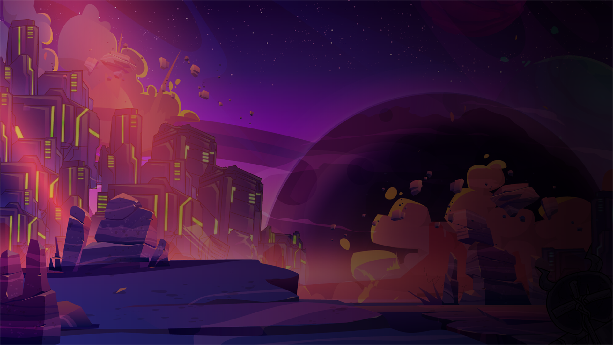

ISKRA PRESENTS / IN DEVELOPMENT
NEUROSHIFT
Build your squad.
Risk everything you bring back.
EXPLORE THE PORTFOLIO
Our games
Preview the entrance with three games ↗
Layout specimens only. Additional panels are not announced Iskra games.
THE COMPANYSmall spark.

Small spark.
Lasting impact.
Independent by nature.
Driven by play.
Iskra is an independent game studio based in Poland. Our name means “spark” — the beginning of an idea, a discovery, a reason to keep playing.
Our first project, NeuroShift, puts squad building, tactical choices and the risk of extraction in your hands.
Discover NeuroShift ↗Something in mind?
Player feedback, press enquiries, publishing and investment conversations.
contact@iskragames.com ↗